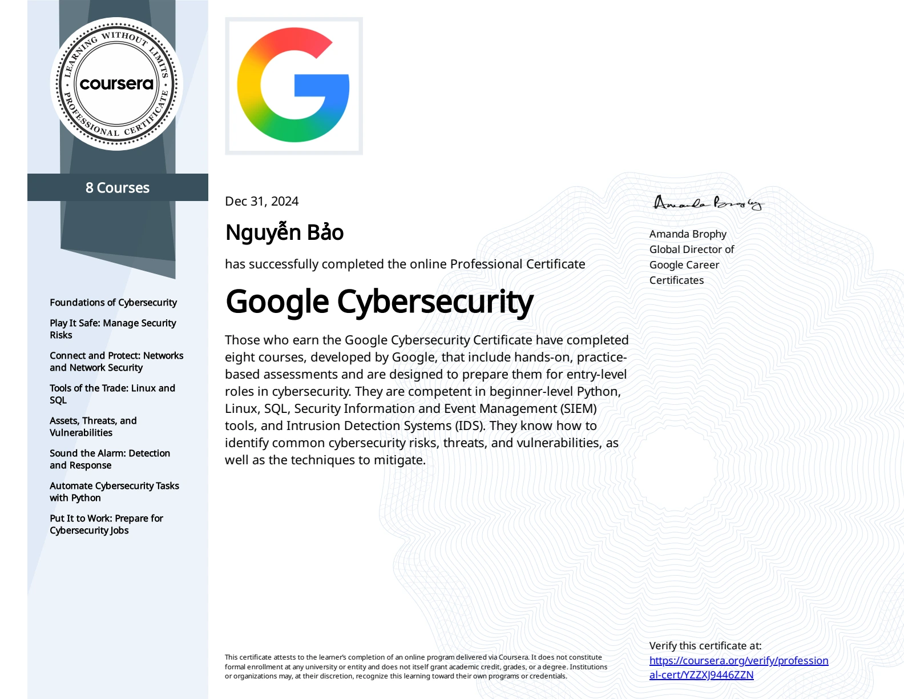

04 / Certifications
Foundations &
continuing study.
A record of formal education, certificates, and ongoing training. Learning paths are listed separately from professional certificates.
Professional certificate
Google Cybersecurity Professional Certificate
Eight courses covering security foundations, Linux, SQL, Python, threat detection, and incident response.
Awarded by Google through Coursera. Certificate name: Nguyễn Bảo. Credential ID: YZZXJ9446ZZN.

University education
B.Sc. Cybersecurity
Duy Tan University · CMU program · Da Nang, Vietnam.
Final-year student. Coursework includes network security, digital forensics, web security, operating systems, and databases.
Applied training
In progress · September 2026
AI in Action — Cohort 4
A 12-week applied AI and LLM development program, recorded as ongoing in the September 2026 résumé.
Training participation; no completion certificate claimed.
Language assessment
September 2026 CV
TOEIC 685
Score reported in the supplied résumé. Test date and public verification link are not available in the portfolio records.
Next steps
What I’m working toward.
My next certification goals connect web exploitation, broader penetration testing, and offensive AI security.
Certification goalHTB CWES
Certified Web Exploitation Specialist
Deepen my approach to testing web applications and APIs, from identifying a weakness to explaining its impact.
Certification goalHTB COAE
Certified Offensive AI Expert
Study attack surfaces in AI and machine learning systems, and how to assess them through practical experiments.
Certification goalHTB CPTS
Certified Penetration Testing Specialist
Build a more complete pentesting workflow across reconnaissance, exploitation, and clear technical reporting.
These are goals I’m working toward; I haven’t earned these certifications yet.
About HTB certifications ↗
171 PortSwigger labs completedI’ve completed 171 labs on PortSwigger Web Security Academy and continue to practise through Hack The Box and CyberDefenders.
Skills & labs →